寅さんシリーズをもう一度 [梅吉]
日中はそれなりに気温も上がりますが朝晩はめっきり涼しくなって・・・
先日は半袖＆七部丈ズボンとガーゼケット一枚で寝ていたら寒くて目が覚めちゃいました。
翌日上掛けを少し厚手のものに変えました。
窓から差し込む日差しもやわらかくなって来ましたね＾＾
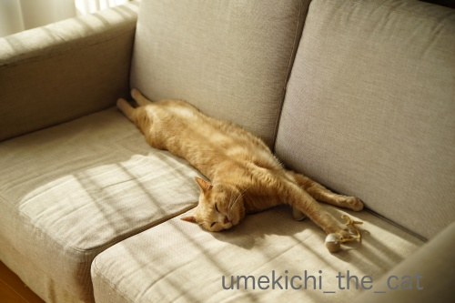
やわらかな日差しの中気持ちよさそうに眠る梅吉さん＾＾

けだるい午後３時って感じにみえますが午前９時ごろです (⌒_⌒;
朝寝が許されるのはにゃんこの特権でしょうか。
☆ ☆ ☆ ☆ ☆ ☆ ☆
麦わら帽子が完璧季節外れになってしまう前に
ゆきちさん命名「寅さんシリーズ」の撮影会をしましたよ＾＾

梅吉さんのこのお帽子姿、なかなか好評をいただいているのですよ。
さぁさぁ！！期待に応えましょうよー。
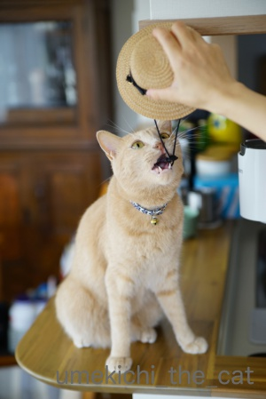
だめだw
モデルさんじゃれつきたい気分みたいです。

ぶ〜んと振り回して
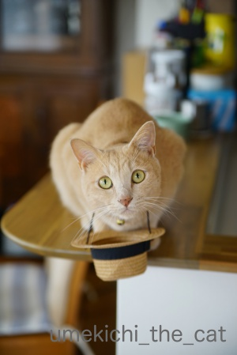
こんなんなっちゃいましたw
そこにおひねりでも入れてもらいましょうか( ´艸｀)
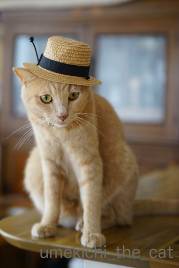
なんとか撮れた一枚がこちら。
帽子から飛び出ているゴムは見なかったことにしてください・・・・・
 ↑ガブッと一押し↑
↑ガブッと一押し↑
葛城古道を歩く後半編、の予定だったのですが
先にお月見の記事にさせてくださいね。
中秋の名月の24日、住吉大社の観月祭に行って来ました。
舞台は太鼓橋（正式名は反橋です）の上に設えられています。
空は生憎雲に覆われておりました。
月は期待出来そうもないかな・・・・
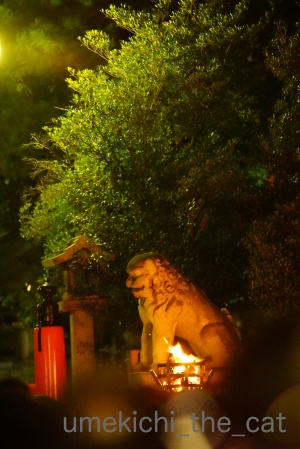
日もとっぷりくれた頃篝火が焚かれ雰囲気満点に。
本殿での神事の後、住吉大社宮司の和歌、公募で選ばれた和歌が冷泉流で披講（ひこう）されました。
披講とは：星と森披講学習会より
『新しく作られた和歌を読み上げたのち、節をつけて歌うこと』だそうです。
お正月、宮中の歌会始のニュースで耳にされた事のある方も多いのではないでしょうか。
あの節まわしです。
ちなみに宮中の歌会始は綾小路流だそう。他に二条流というのもあるみたい。
続いて俳句の朗詠。
この一連の朗詠がとーっても長くて途中でちょっと飽きて来ちゃいましたw
（席取りのために観月祭の始まる１時間半前から会場で座っていたし・・・）
雨も時折ポツポツ落ちて来て雲も厚いまま。もう帰ろうかなぁなんて思った頃に始まった住吉踊り。
空を覆っていた雲が晴れ始めましたよー！
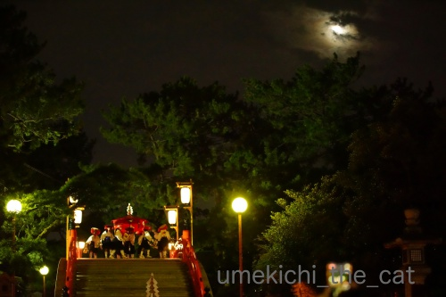

おおおおおおおお！！！
朧月ですがちゃんと見えました！！
感動の瞬間。会場の皆さんは住吉踊りはそっちのけで月にカメラを向けて歓声 (⌒_⌒;
はい、我が家もです・・・
その後舞楽などあり雅やかな観月祭でした。
太鼓橋に月、絵になりますよね＾＾
先日は半袖＆七部丈ズボンとガーゼケット一枚で寝ていたら寒くて目が覚めちゃいました。
翌日上掛けを少し厚手のものに変えました。
窓から差し込む日差しもやわらかくなって来ましたね＾＾
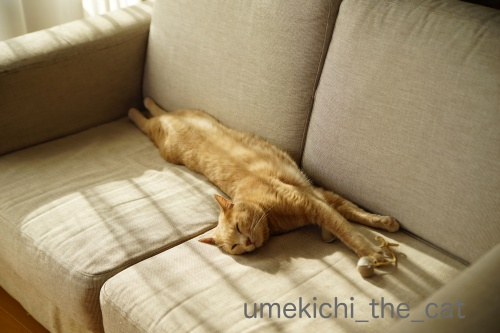
やわらかな日差しの中気持ちよさそうに眠る梅吉さん＾＾
けだるい午後３時って感じにみえますが午前９時ごろです (⌒_⌒;
朝寝が許されるのはにゃんこの特権でしょうか。
☆ ☆ ☆ ☆ ☆ ☆ ☆
麦わら帽子が完璧季節外れになってしまう前に
ゆきちさん命名「寅さんシリーズ」の撮影会をしましたよ＾＾
梅吉さんのこのお帽子姿、なかなか好評をいただいているのですよ。
さぁさぁ！！期待に応えましょうよー。
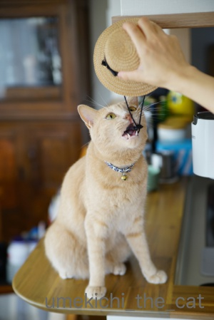
だめだw
モデルさんじゃれつきたい気分みたいです。
ぶ〜んと振り回して
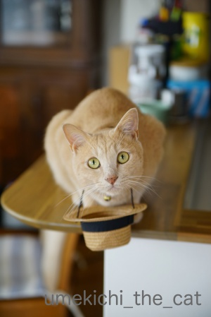
こんなんなっちゃいましたw
そこにおひねりでも入れてもらいましょうか( ´艸｀)
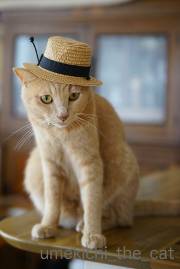
なんとか撮れた一枚がこちら。
帽子から飛び出ているゴムは見なかったことにしてください・・・・・
葛城古道を歩く後半編、の予定だったのですが
先にお月見の記事にさせてくださいね。
中秋の名月の24日、住吉大社の観月祭に行って来ました。
舞台は太鼓橋（正式名は反橋です）の上に設えられています。
空は生憎雲に覆われておりました。
月は期待出来そうもないかな・・・・
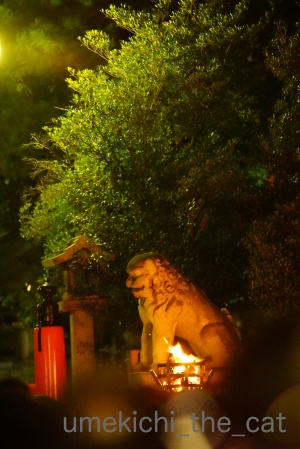
日もとっぷりくれた頃篝火が焚かれ雰囲気満点に。
本殿での神事の後、住吉大社宮司の和歌、公募で選ばれた和歌が冷泉流で披講（ひこう）されました。
披講とは：星と森披講学習会より
『新しく作られた和歌を読み上げたのち、節をつけて歌うこと』だそうです。
お正月、宮中の歌会始のニュースで耳にされた事のある方も多いのではないでしょうか。
あの節まわしです。
ちなみに宮中の歌会始は綾小路流だそう。他に二条流というのもあるみたい。
続いて俳句の朗詠。
この一連の朗詠がとーっても長くて途中でちょっと飽きて来ちゃいましたw
（席取りのために観月祭の始まる１時間半前から会場で座っていたし・・・）
雨も時折ポツポツ落ちて来て雲も厚いまま。もう帰ろうかなぁなんて思った頃に始まった住吉踊り。
空を覆っていた雲が晴れ始めましたよー！
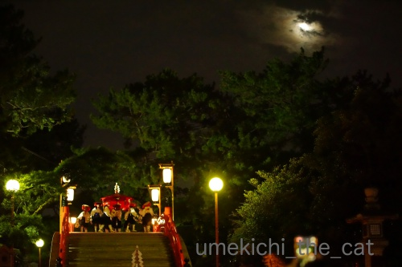
おおおおおおおお！！！
朧月ですがちゃんと見えました！！
感動の瞬間。会場の皆さんは住吉踊りはそっちのけで月にカメラを向けて歓声 (⌒_⌒;
はい、我が家もです・・・
その後舞楽などあり雅やかな観月祭でした。
太鼓橋に月、絵になりますよね＾＾

カフェオレ色の梅吉

梅吉 2023年8月10日 永眠


梅吉と出会った譲渡会

犬猫の理由なき殺処分ゼロ
妄想広告
UMEKICHI 光

爆発的に早い！
時々攻撃的！
Thanks to Mr.Boss365
爆発的に早い！
時々攻撃的！
Thanks to Mr.Boss365

朝晩は本当に寒くなってきましたね！
もう羽毛布団を出しちゃいました(#^.^#)
朝寝♪ 気持ちよそうですねぇ～
一緒に横になりたい気分になります♪
ヨっ 寅さん♪と呼びたるくらいに
決まりましたねぇ～！
それまでにいろいろとじゃれていたようですが♪
それもまた可愛いです！
by きぃ (2018-09-28 06:36)
こういう場面では満月より朧月が良いかも＾＾
by ぽちの輔 (2018-09-28 07:07)
梅吉さん「モデル料くださいにゃあ」と言ってるように見えました^^
by ニコニコファイト (2018-09-28 07:10)
梅吉君、麦わら帽子が本当によく似合います^^
寅さんだなんて！！(笑)
寅さんよりもずっとずっとカッコイイイケニャンだわ♪♪
観月祭、すごいゾワゾワっときちゃった！
なんて厳かなの。素敵すぎます。近くでその空気感じられるのが羨ましい^^
by リュカ (2018-09-28 10:01)
梅吉さん、気持ち良さそうな寝顔(^O^)
こういう穏やかな時間って良いですよねぇ・・・まだ朝９時でもｗ
梅吉さん、おひねりはカリカリですか？ちゅーるですか？
住吉大社の観月祭、朧月夜に篝火の灯りの中で舞う姿
幻想的でとてもステキです(^-^)
by ニッキー (2018-09-28 11:01)
おはようございます。
ベランダから良い日差しが入ってます。猫のように伸び伸び寝たいものです！！
流石！！お洒落な梅吉君！！ゴム跳ねハット？素朴な花飾り？に好感がもてます。
住吉踊り？面白そうですが・・・
「月にカメラを向けて歓声」の光景の方がもっと面白いです！！
住吉踊り？月にツキを持っていかれた感じです？
近くに大きな神社があると、風流で季節を身近に感じますね！？(=^･ｪ･^=)
ウサギさんは見ましたか？
by Boss365 (2018-09-28 11:03)
なが~い梅吉さん2人がけソファーを独り占め。何かおもちゃも持ったままかな。
観月祭風流ですねー。昔に迷い込んだようなこの世のものでない雰囲気に見えます。観月祭なのですから月も出さないとですね。
by zombiekong (2018-09-28 11:59)
寅さんシリーズありがとうございます＼(^o^)／
帽子がアゴの下、梅吉さんなんて斬新な♪
そうなんですよね～落ちないようにゴムをつけると、ゴムのほうに執着してガジガジして終了・・・我が家のいつものパターンです^^;
太鼓橋の上で観月祭をやるのですね！
美しい朧月が神秘的、そこだけゆったりと別の時間が流れていそう。
住吉踊りさんにはちょっとお気の毒ですが、主役はお月さまですもんね(#^^#)
by ゆきち (2018-09-28 12:36)
梅吉くん、気持ちよさそう。
この、足を突っ張る(？)猫らしからぬ寝方。好きなんだよな～。
可愛くってたまらない(*^-^*)
寅さんシリーズも！笑いました♪
観月祭。写真から雰囲気が伝わってきますよ。
幻想的な、なんだか異空間に迷い込んだような不思議な感じがします。
by emi (2018-09-28 14:37)
朝の9時にこのまどろみ感!!私も朝の9時にこんな風に寝てみたい(:_;)
帽子似合いますね。最後の1枚カサブランカダンディ(古っ）かと思いましたよ。あ、あれは麦わらじゃないや。ま、雰囲気ね(#^^#)
by palpal (2018-09-28 14:37)
あの酷暑が現実だったとは思えないほど、涼しくなって来ましたね。
うめ吉さんの寝姿からは幸せを頂けます。
そして『寅さんシリーズ』苦労しましたね（笑）
某氏から飛び出した黒ゴム、
羽飾りがついた帽子のようで、粋な感じが出てますよ。
見ても大丈夫。
観月祭のお知らせ、その日に（地域の新聞で？）知りました（笑）
雅ですね〜
by kiki (2018-09-28 15:58)
ミルクティーと秋の光が混じりあう奇跡・・・それも、梅吉王子が心からのリラックスを堪能している・・・愛！
by Ginger (2018-09-28 19:13)
一昨日寒くて毛布を引っ張り出して、パジャマも厚手のジャージに替えました！
今月初旬に入院したときは暑かったのに、季節が早いですね！
梅吉さんはそろそろ冬毛かな？
by ma2ma2 (2018-09-28 19:25)
への字のお目目とお口が可愛いです。寝ている梅吉さん(^^)
帽子から飛び出ているゴムがアクセントになって、私は好きです。
思わず微笑んでしまいます(^^)
by riverwalk (2018-09-28 21:50)
梅吉さんの隣に小さなかばんを置きたくなる。。。^^;
観月祭、月が出たとのことで素晴らしいです。
夜の撮影は難しいですが雰囲気が伝わってきてお見事です。
by yes_hama (2018-09-28 21:55)
おやすみ中の梅吉さん♪ えびす顔だわ〜♪
観月祭、荘厳な雰囲気でいいですね〜
こんな厳かなお祭りをやってたら、月も顔を出すしかないわ(^.^)
by のらん (2018-09-29 11:17)
なんか、色々きれいだし、気持ち良さそうだし
おごそかだし！
梅吉さん寝てる顔、ほんと気持ち良さそう。
麦わら帽子、似合いますね。
by ふにゃいの (2018-09-29 22:44)
今年は秋が長い（まだ分からないけど^^;）ような気がします。
例年であれば、まだまだ暑かったよーな・・・
なので、例年から考え、まだ麦わら帽、OKです！（笑）
しかし梅サマ、似合ってますね。色もお揃いで^^
神事で曇り空から雲が明けて・・・ってなんだか神秘的ですね。
こういう、雲の間から見える月も好きです。
by Ja-Kou66 (2018-09-30 01:09)
きぃさん＞
早速羽毛布団！季節先取りですね(^_－)☆
しゃしんとるなら あそんでからや！と
ゴムにじゃれ付いていましたよw
ごもっともです！と仰せに従いましたー＾＾
ぽちの輔さん＞
そうそう！まんまるよりもちょっと欠けた月
はっきり見える月よりも朧月。
日本人の美しい感性ですよね＾＾
ニコニコファイトさん＞
おひねりを期待する前に
まず下僕がモデル料をお支払いしなければいけなかったのですね！
うっかりしておりましたw
リュカさん＞
イケにゃん寅さんシリーズにしようかしら( ´艸｀)
山田監督の目に留まるかしらー！
観月祭、気にはなっていたのですが初めて行ってきました。
こんなに大掛かりなものと思っていなかったので感激でしたよ＾＾
外国人の方の姿もちらほら・・・
日本人でもそう馴染みのない光景、良い思い出になってくれるといいなぁ。
ニッキーさん＞
朝の９時から穏やかで脱力した時間をもらいました！
気のせいかこの日1日心地よく過ごせた様な＾＾猫様効果！？
おひねりは鼻筋カキカキが良いかもしれません。
やんちゃ坊主ですが撫でられるのは好きなんです。
運が良かったら（笑）がぶのお返しがあるかもしれませんw
Boss365さん＞
そうですね！あのゴムは飾り・・・
アバンギャルドな香りがしないこともないですね ( ´艸｀)
梅吉風として広めましょうかw
主役の月にツキを持っていかれた（座布団１枚！）となっては
住吉踊りさんも文句は言えませんね。
素敵な住吉踊りに思わず月も顔をのぞかせた、と
踊り手の方達には思っていただきたいでーす！
ウサギさんは見当たりませんでしたがにゃんこが飛び回っていたような？
梅吉！？
zombiekongさん＞
そうなんですよ！
梅吉に長〜くなられるとソファに座れなくなっちゃいます。
私は「ご一緒しても良いですか？」とお尻をねじ込みますけどw
見られないかな、と諦めていた月が顔を出したので
みなさん余計に盛り上がったようです＾＾
大阪の空に見える月はちゃんとウケるタイミングを計ってたんでしょうかwww
ゆきちさん＞
こちらこそ、命名ありがとうございます＾＾
毎夏のシリーズとして定着させたいものですw
被り物につきもののゴムやポンポン、
間違いなく反応してきますよねー。
それで遊んでくれるのもたまた楽し＆かわいいですけれど(≧▽≦)
観月祭はテーマが月見と言うだけあって
初詣や大祭時とは違った年齢層の高い客層で
落ち着いた雰囲気でもありました(´▽｀)
emiさん＞
足を突っ張って寝ますよね＾＾
その突っ張った足をふるふるさせながらぐいーんと伸びたりするし。
一緒に寝ていて足や手で突っ張られるのも至福のひと時ですよねw
篝火が幻想的な雰囲気を一層盛り上げていました！
暗闇には妖も集まっているんじゃ？なんて雰囲気も満点でしたよ！！
palpalさん＞
ねー！朝寝楽しんでみたいよね；；
私の場合朝寝しよう！と決意しても
あれこれ気になって寝ていられない貧乏性だけどw
私はジュリーじゃなくてボギーの方を思いましたよ・・・
さらに古っ！
ああ、ボギーはリアルタイムには知らないですよwww
kikiさん＞
猫ってどうしてこんなにしあわせそうに寝るんでしょうねー。
いいよねー朝からぐっすり寝て！！なんて文句言いながらも
しあわせそうな寝顔には思わずニコニコしちゃいます＾＾
kikiさんもゴムを飾りに見立てられたのですね！
私ももうすっかりその気になりました。
良いアクセントだわ〜Ｏ(≧▽≦)Ｏ
Gingerさん＞
ぬくぬくと安心しきって眠る・・・
私も梅吉の寝顔からいっぱい愛をもらっちゃいましたよー＾＾
ma2ma2さん＞
我が家もそろそろ厚手のパジャマにしようかな・・・
とりあえずこの台風が過ぎてから、です。
（大阪蒸しっとしております）
梅吉はそうそうに冬準備を始めておりますよー＾＾
riverwalkさん＞
私もあの悪戯っ子らしいへの字口大好きですＯ(≧▽≦)Ｏ
ゴムがアクセント、そうおっしゃってくださる方が多くて
私もすっかりその気です。
あのゴムで写真が「締まった」と(*>艸<)
yes_hamaさん＞
時々ドールグッズを売っているような店で物色しているのですよ・・・
カバン(〃▽〃)
なかなか寅さんぽいのがないのですよねー。
画像検索して寅さんのカバンどんなの？と調べまでしたのにw
（私寅さん映画見たことないのです・・・）
観月祭の写真、お誉めいただいてありがとうございます！
写真はすべておっとの撮影、最近手に入れたレンズが活躍したようです＾＾
のらんさん＞
こんな顔されたら「何寝てんのよー」と文句言えなくなっちゃいますw
雅な楽と舞、本当に月も思わず顔を出すって感じでした。
そして大阪の空の月は一番ウケるタイミングを逃さない、と(*>艸<)
ふにゃいのさん＞
はい＾＾色々お誉めいただいてありがとうございます(*>艸<)
梅吉は本当に気持ち良さそうな顔して寝るんですよ！
朝寝を非難されないように顔作ってる！？って思っちゃいますw
麦わら帽子は毎年恒例にしようと思っております(^_－)☆
Ja-Kou66さん＞
おお！心強い麦わらOK宣言ありがとうございます＾＾
あとはぜひぜひ寅さん風のカバンを入手したいところでございますw
はっきり見えるのも良いけれど奥ゆかしく朧月・・・
日本人の素敵な感性ですよね(^_－)☆
by ちぃ (2018-09-30 16:28)
柔らかな日差しの中でのびきってまどろむ梅吉さん、いいですね～＾＾
すっごく薄くなってる？＾＾
麦わら帽子、似合います！
ゴムに興味が行くのも御猫様あるあるで可愛い～♪
サイズも色もピッタリ、決まりますね。
住吉大社の観月祭、風流ですねえ。
お近くでこんな素晴らしいものが見られるとは。朧月も素敵です～＾＾
by sana (2018-09-30 16:42)
台風、ちぃさん地域は如何でしたか？
もう通り過ぎたと思いますが、
台風の左側だったので風の影響が少なかったように思います。
梅吉さんが怖がったりしないでいると良いなと思ってます。
by kiki (2018-09-30 21:40)
梅吉さんにとっても、過ごしやすい季節が来ましたね～＾＾
寅さんシリーズ、夏の撮り納めですね。
帽子が似合う梅吉さん。
秋冬はどんな被り物シリーズかな？
わくわく( ´∀｀ )
by マーヤ (2018-09-30 22:28)
sanaさん＞
伸びきっている梅吉、ぺったらこく（笑）なってます＾＾
よほど眠かったのかどこを触っても無抵抗でした！
こんな腑抜けた顔してても麦わら帽子をかぶせるとキリッとw
来夏も被せて楽しみたいと思っています。
曇り空からの、うすーく月明かりが雲間から漏れ出しての白く輝く朧月
忘れられないお月見になりました。
kikiさん＞
台風一過風は強いですが良い天気になりましたね＾＾
が、また新しい台風が発生して週末ごろやってくるかも、とか・・・
もう勘弁して欲しいですねwww
マーヤさん＞
酷暑中もしっかり眠りこけておりましたが
過ごしやすい季節の睡眠は格別なようですね＾＾
寅さんシリーズで無事夏を納めることもできたし
次はー！！
あれですよー！人間も盛り上がるあれですよー( ´艸｀)
by ちぃ (2018-10-01 14:22)